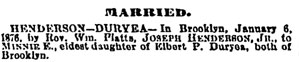
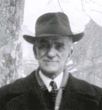
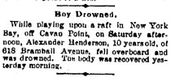

|
Joseph
Henderson Jr. was the second son of Captain Joseph Henderson. He married
Mary E. Duryea, had three children, and died at the age of 54 from
pneumonia. |
||
Important
Facts |
||

| 1854 | Born in Brooklyn, New York. The son of Captain Joseph Henderson and Angelina Annetta Weaver. Source: 1860 US Census for 9th Ward Brooklyn City, County of Kings. |  New York Map click on image |
| June 14, 1855 | The New York State Census lists Joseph (28), Angelina A (22), Sarah R (5), Morris (4), Joseph (2) and Elizabeth Mcgrath (14) living in Ward 7, Brooklyn City, Kings, New York. Source: New York, State Census, 1855, index and images, FamilySearch: accessed 04 Oct 2013. | |
| July 12, 1860 | The 1860 US Census lists J. Henderson (32), Ann (29), Sarah (10), Maurice (8), and Joseph (6) as living in the 9th Ward Brooklyn city, county of Kings. Source: 1860 US Census for 9th Ward Brooklyn City, County of Kings. | |
| July 26, 1870 | The 1870 US Federal Census lists Joseph (46), Angelina (38), Sarah R. (20), Maurice D. (18), Joseph Jr. (16), Mary Ann (10), Angelina A. (8), and Alexander D. (6). Source: 1870 US Census, 21-WD Brooklyn, Kings County, New York, Series: M593, Roll: 961, Part: 1, Page: 349A. | |
| January 6, 1876 | The Rev. Win. Platts married Mary Emma Duryea and Joseph Henderson, Jr., on January 6, 1876 in Brooklyn, New York. Mary E. Duryea was the eldest daughter of Elbert P. Duryea and Alma J. Seaman of Brooklyn, New York. Joseph's residence was listed as 983 Myrtle Street. His occupation was listed as Clerk. Source: The Brooklyn Daily Eagle, pg. 3, February 1, 1876; New York City Brides Record Index Results, Marriage Certificate Number 41. |  Marriage Announcement |
February 27, 1875 |
Their first child, Joseph Henderson III was born in New York. Source: 1880 US Federal Census for Jersey City, Hudson, New Jersey. | |
| Aug. 1, 1877 | Joseph was baptized at the St. Matthew Church in Brooklyn, NY. Source: Church Records from the Church of St. Luke and St. Matthew. | |
| July 25, 1879 | Their second child, Robert B. Henderson was born in New York. Source: 1880 US Federal Census for Jersey City, Hudson, New Jersey. |  Robert B. Henderson Sr. |
| June 15, 1880 | The 1880 U.S. Census lists Joseph Henderson (28), Mary (25), Joseph (4), and Robert (2). Joseph's occupation was listed as Clerk and his father was listed as being born in Charleston, S.C. Their residence was 32 West Side Avenue, Jersey City, Hudson, New Jersey. Source: 1880 US Federal Census for Jersey City, Hudson, New Jersey; Roll: T9_783; Family History Film: 1254783; Page: 116.2000; Enumeration District: 24; Image: 0502. | |
| November 10, 1880 | Their third child, Alexander D. Henderson was born in Jersey City, New Jersey. Source: Green-Wood Cemetery records. | |
| January 7, 1886 | Mr. and Mrs. Joseph Henderson, Jr., at No. 67 Atantic Street, on the Hill, Jersey City, celebrated their 10 wedding anniversary. Mr. and Mrs. Henderson and Mr. and Mrs. Hendrickson attended the event. Source: The Evening Telegram, New York. |  New Jersey Map click on image |
| 1889-1990 | Joseph Henderson Jr. was listed in the Jersey City, New Jersey Directories as living on 618 Bramhall Avenue, Jersey City, New Jersey. Source: Jersey City, New Jersey Directories, 1889-90, page 259. | |
| 1890 | 1890 US Census - no census record available. | |
| May 17, 1890 | Alexander D. Henderson died from drowning. At the time of their son’s death the family was still living at 618 Bramhall Avenue, Jersey City, New Jersey. Source: Green-Wood Cemetery records and the New Jersey Deaths and Burials, 1720-1988. |  Alexander D. Henderson, Jr. |
| May 19, 1890 | Their son's death was announced in the New York Herald: "Boy Drowned - While playing upon a raft in New York Bay, off Cavao Point, on Saturday afternoon, Alexander Henderson, 10 years old, of 618 Bramhall Avenue, fell overboard and was drowned. The body was recovered yesterday morning." Source: New York Herald. | |
| May 20, 1890 | Alexander D. Henderson was buried at the Green-Wood Cemetery in the family plot, lot #13244 and Section #88 of the same cemetery as his parents. His gravestone reads: "Allie D. Henderson". Source: The Green-Wood Cemetery family plot. | |
| October 7, 1890 | His father, Captain Joseph Henderson, died at 633 Willoughby Avenue, Brooklyn, New York. He was buried in Green-Wood Cemetery at the family plot in Brooklyn,. Lot 13244, Section 88. | |
| 1891-93 | Joseph Henderson, Jr was listed in the Jersey City, New Jersey Directories as living on 618 Bramhall Avenue, Jersey City, NJ. His occupation is listed as broker. Source: Ancestry.com. Jersey City, New Jersey Directories, 1891-93. | |
| January 21, 1900 | His son, Robert B. Henderson married Lilly E. Castell in Port Richmond, N.Y. Source: New York State Marriage Certificate. | |
| May 09, 1900 | His son, Robert B. Henderson, had a son named Robert B. Henderson Jr., who is listed under the births reported in the Borough of Brooklyn. Source: New York City Births, 1891-1902, Certificate Number 8516. | |
| 1900 | Joseph Henderson Jr. was 46. There is no US Census for 1900 found for Joseph Henderson Jr. living in New York or New Jersey. In Nonny’s book, she mentioned that Joseph might have disappeared to California. |
|
| June 1, 1905 | Joseph Henderson (55, Real Estate), Minnie (50), and Joseph (28) are listed in the 1905 New York State Census living on 19 Hanover Place, Brooklyn, New York. Source: 1905 New York State Census. | |
March 23, 1908 |
At age 54, Joseph Henderson Jr. died of pneumonia at the St. John's Hospital in Kings County, New York. His occupation was Insurance Agent. His father was listed as Joseph Henderson and mother listed as Angelina Weaver. His residence was listed as 260 Schermerhorn St. Source: New York Death Certificate Number, #6101. | |
March 25, 1908 |
Joseph's obituary was listed in the New York Times, "260 Schermerhorn St., Funeral today." Source: New York Times (1857-Current file); Mar 25, 1908; and ProQuest Historical Newspapers The New York Times, pg. 9. | |
March 25, 1908 |
Joseph Henderson Jr., was buried at the Green-Wood Cemetery in the family plot, Lot #13244 and Section #88. Source: Green-Wood Cemetery family plot. | |
May 27, 1914 |
Mary E. Jones, his former wife, is buried in the same grave with Joseph. Both of their names are carved on the gravestone. Source: Green-Wood Cemetery family plot. |

Last update: Thursday, February 26, 2026